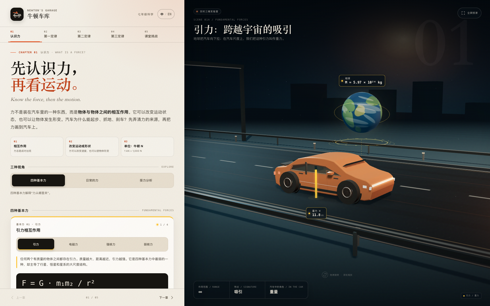

跳到主要内容
牛顿科学探索馆
让学生爱上科学
天文学
物理学
生物学
化学
地质学
更新日志
29
个互动学习内容
LEARN · EXPLORE
中
/
EN
牛顿科学探索馆
/
物理学
/
力与运动
TOPIC / Forces & Motion
力与运动
通过一辆可操作的 3D 汽车，观察受力图与牛顿三大定律。
一辆车 · 三条定律
适合课堂展示与自主探索
三维模型、力箭头和场景为教学示意；数值及简化条件见各演示说明。
INTERACTIVE LESSONS
选择一个演示
从受力图开始，依次探索牛顿三大定律。

EXPLORE / 01
牛顿车库
Newton's Garage
切换运动状态、调节质量与驱动力，完成五章互动实验与课堂挑战。
3D 汽车 · 双语 · 五章实验
打开演示
→